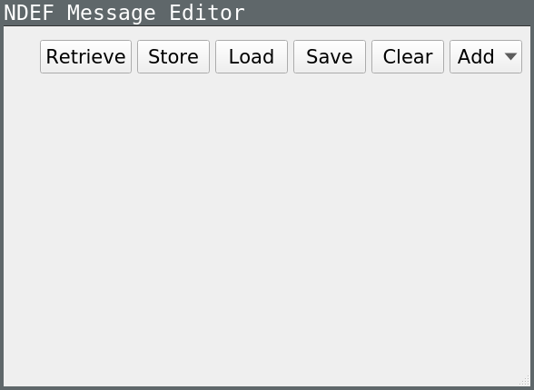

NDEF Editor Example
An example about reading and writing NFC Data Exchange Format (NDEF) messages to NFC Forum Tags.
The NDEF Editor example reads and writes NFC Data Exchange Format (NDEF) messages to NFC Forum Tags. NDEF messages can be composed by adding records of supported types. Additionally, NDEF messages can be loaded/saved from/into a file located in the file system of the machine where the application is running.

NFC Tag detection
The MainWindow class is able to detect if a NFC Tag is in the range for read/write operations. It can also detect if connectivity has been lost. This is achieved by connecting the MainWindow class private handlers to the signals QNearFieldManager::targetDetected and QNearFieldManager::targetLost.
m_manager = new QNearFieldManager(this); connect(m_manager, &QNearFieldManager::targetDetected, this, &MainWindow::targetDetected); connect(m_manager, &QNearFieldManager::targetLost, this, &MainWindow::targetLost);
Through the UI a user requests when to start the detection of a NFC Tag by calling the method QNearFieldManager::startTargetDetection.
m_manager->startTargetDetection();
Once the target is detected the MainWindow connects the following signals to its internal private slots: QNearFieldTarget::ndefMessageRead, QNearFieldTarget::NdefReadError, QNearFieldTarget::ndefMessagesWritten, QNearFieldTarget::NdefWriteError and QNearFieldTarget::error
void MainWindow::targetDetected(QNearFieldTarget *target) { switch (m_touchAction) { case NoAction: break; case ReadNdef: connect(target, &QNearFieldTarget::ndefMessageRead, this, &MainWindow::ndefMessageRead); connect(target, &QNearFieldTarget::error, this, &MainWindow::targetError); m_request = target->readNdefMessages(); if (!m_request.isValid()) // cannot read messages targetError(QNearFieldTarget::NdefReadError, m_request); break; case WriteNdef: connect(target, &QNearFieldTarget::ndefMessagesWritten, this, &MainWindow::ndefMessageWritten); connect(target, &QNearFieldTarget::error, this, &MainWindow::targetError); m_request = target->writeNdefMessages(QList<QNdefMessage>() << ndefMessage()); if (!m_request.isValid()) // cannot write messages targetError(QNearFieldTarget::NdefWriteError, m_request); break; } }
If during the process of reading or writing to a NFC Tag the connection is lost, the MainWindow reacts to this event by scheduling the target deletion (QObject::deleteLater).
void MainWindow::targetLost(QNearFieldTarget *target) { target->deleteLater(); }
Record creation
The main window of the ndefeditor example manages the composition and creation of NFC records. The UI contains a QScrollArea where RecordEditors are added dynamically on a user requests basis. The following methods of the MainWindow class provide an interface towards each of the record editing classes managing the different types of records.
void addNfcTextRecord(); void addNfcUriRecord(); void addMimeImageRecord(); void addEmptyRecord();
The following sections explain each of the record editing classes.
Record editing classes
TextRecordEditor
The TextRecordEditor is a QWidget that can handle editing the values of text record that has been requested by the user. For each text record, there is a new instance of this class.
class TextRecordEditor : public QWidget { Q_OBJECT public: explicit TextRecordEditor(QWidget *parent = 0); ~TextRecordEditor(); void setRecord(const QNdefNfcTextRecord &textRecord); QNdefNfcTextRecord record() const; private: Ui::TextRecordEditor *ui; };
UriRecordEditor
The UriRecordEditor is a QWidget that can handle editing the values of Uri record that has been requested by the user. For each new Uri record there is a new instance of this class.
class UriRecordEditor : public QWidget { Q_OBJECT public: explicit UriRecordEditor(QWidget *parent = 0); ~UriRecordEditor(); void setRecord(const QNdefNfcUriRecord &uriRecord); QNdefNfcUriRecord record() const; private: Ui::UriRecordEditor *ui; };
MimeImageRecordEditor
The UriRecordEditor is a QWidget that can handle editing the values of a Mime Image record that has been requested by the user. For each Mime Image record there is a new instance of this class.
class MimeImageRecordEditor : public QWidget { Q_OBJECT public: explicit MimeImageRecordEditor(QWidget *parent = 0); ~MimeImageRecordEditor(); void setRecord(const QNdefRecord &record); QNdefRecord record() const; private: Ui::MimeImageRecordEditor *ui; QNdefRecord m_record; private slots: void on_mimeImageOpen_clicked(); };
Running the Example
To run the example from Qt Creator, open the Welcome mode and select the example from Examples. For more information, visit Building and Running an Example.
See also Qt NFC.